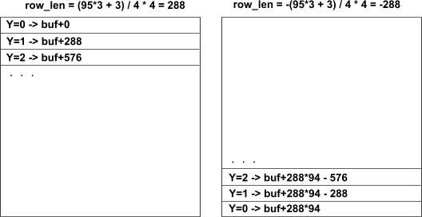
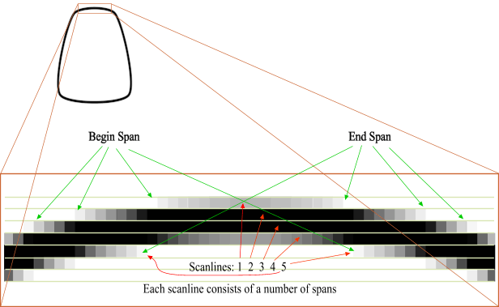
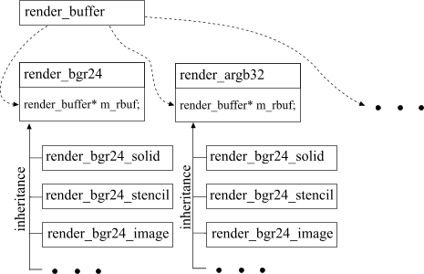
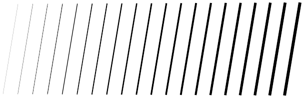

|
| AGG Tutorial |
|
It is not a traditional tutorial, it does not begin with the simplest "Hello World!" program, but instead, it will guide you from the lowest level classes and functions of AGG to more complex ones (without getting into the details, however). This way is easier to understand the idea and the architecture of the library. AGG is designed to be as open library as possible. Almost any part of it can be endlessly extended without changing the existig code. The main idea of AGG is not to provide a fully functional monster-looking graphic interface, but provide a number of small independent (or almost independent) parts that help you to construct your own interfaces very easily. So, you won't find in the library a class like "Graphics" that has hundreds of functions Get/Set, Line, Circle, and so on. However, the capabilities of AGG are unique because you can create your own classes and embed them into the library in the most natural way. You can control, for example, the issue of who, when, where, and what has the responsibility for conversion from world to device coordinates. You can also add your own unique rendering classes, that, for example, can perform Phong shading. 1. Rendering Buffer
AGG is a 2D rendering library that works with a buffer in memory. Strictly speaking
it's not quite right, AGG can work with almost any drawing interface, but for now let us
think so in order not to get into details right away. Besides, rendering
with buffer is the primary technique in AGG because it guarantees the highest possible
quality of the resulting images.
Again, pixel format is not a restriction, in fact it can represent even different color spaces, for example, CMYK. But you will have to display the rendered image afterwards and if the buffer format (or color space) is different from the one used in your system, you will have to convert it before displaying every time, which can be too expensive and kill the performance. Since the library does not depend on any particular platform or architecture it was decided that it's your responsibility to create and destroy rendering buffers properly. You can use any available mechanism to create it - system API functions, simple memory allocation, or even statically defined array. The first class AGG starts with is agg::render_buffer. It's a very simple class that does not even allocate memory for the rendering buffer. What is it needed for? Let's start with an example: // Suppose we work with 24-bit B-G-R True Color, // and allocate memory for the buffer 95x95 pixels. // In many systems the length of the rows in bytes // must be aligned to some power of 2 value. In Windows // it's 4 bytes. So, we have to calculate the length of // the row in bytes, considering the alignment. unsigned int row_bytes = (95 * 3 + 3) / 4 * 4; unsigned char* buf = new unsigned char[95 * row_bytes]; agg::render_buffer rbuf; rbuf.attach(buf, 95, 95, int(row_bytes)); Here we allocated the buffer, created an object of agg::render_buffer and attached the allocated memory to it. The object rbuf is ready to work. But it does not know anything about the pixel format and it does not control the memory we've just allocated, we will have to delete [] buf when the work is done. But the class provides a very useful function get_row(y) which returns a pointer to the row with coordinate y. The class can do that because it knows the length of the row in bytes. The coordinates of any pixel can be calculated by the formula: pix_ptr = buf + y * row_bytes + x * pix_bytes Where row_bytes - number of bytes per row, pix_bytes - number of bytes per pixel. But agg::render_buffer, when its method attach() is called, precalculates the pointers for every row in order to avoid one extra multiplication when rendering. The adresses of pixels will be calculated very often, so, it saves you some time. But not only the performance matters here, it gives you flexibility. First, the value row_butes can be positive or negative. If it's positive, the pixel rows start from the beginning of the buffer and grow as the addresses in memory inrease. The negative value means that the rows start from the end of it (in fact, from its last row) and increasing Y means decreasing the addresses in memory. In other words, the image will be flipped vertically, and it allows you to change the direction of the Y coordinate very easily. Considering this possibility, precalculation of the addresses becomes more meaningful.  Second, you can attach agg::render_buffer to any part of a larger allocated buffer. In this case you will have to calculate the address where the buffer starts by yourself. For example, suppose we have a buffer 1024 x 1024. We can easily attach an object of agg::render_buf of size 256 x 256, starting from coordinate (512,512) to this very buffer (suppose, we have the same 24-bit pixel format): unsigned int row_bytes = (1024*3 + 3) / 4 * 4; unsigned char* start_buf = buf_1024x1024 + 512 * row_bytes + 512*3; agg::render_buffer rbuf; rbuf.attach(buf, 128, 128, int(row_bytes));
Class agg::render_buffer also has functions of setting the clipping box: set_clipbox and get_clipbox. It does not do anything except storing the coordinates of the clipbox. The reason to place the clipbox coordinates into this class is that only agg::render_buffer knows the width and the height of the buffer and it performs clipping the clipbox if you try to set it larger than the actual size of the buffer. 2. Base Rendering ClassesSince agg::render_buffer does not know anything about the pixel format there must be something that does. It's a set of classes agg::render_XXXX where XXXX is the abbreviation of the particular pixel format served by this base class, for example, render_bgr24 is designed to work with 24-bit pixels whose components have order Blue-Green-Red in memory. These classes don't have any common base class and they can have any drawing functionality. Basically they should have very simple utility functions such as clear, rectangle, get_pixel, put_pixel, copy_from. The constructors of this classes require a pointer to an object of agg::render_buffer. But what if we created a grayscale-buffer with 1 byte per pixel and pass it to the render_bgr24 class? Nothing. There's no way to check if your buffer corresponds to your rendering class. It's also your responsibility, but it's not painful. Otherways we had to use some enumeration of a sort of "graphic modes" and so, initially restrict the capabilities of adding new pixel formats and color spaces. Although these classes seem to have the same fuctionality, they do not have any base class and they are not polymorhic ones. There're three reasons of doing so:
This set of classes is not used for rendering directly because they have very poor set of functions (they even don't have to have any). Before we learn what classes are actually used for rendering we need to mention about a special class agg::scanline. Although this class is not seen in applications it plays a very important role of transfering pixel data in the low level of the library. 3. Scanline ContainerThe primary rendering techique in AGG is to generate a number of scanlines that will be superimposed on the pixel buffer. A scanline is simply an array of bytes whose values determine the brightness of the corresponding pixels. Value 0 means there no changes will be done (absolut transparency), value 255 means complete opacity. Intermediate values determine half-transparency. Scanline does not have any other information, such as color, so, this is the responsibility of the scanline renderers to interpret the values of the scanline. For the sake of performance the scanline container keeps only values greater than 0, thus the scanline consists of a number of non-zero spans.  Class agg::scanline is an internal class, it's used in agg::polyfill and in each of scanline rendering classes. This chapter gives you only common information about the library design. You will need to learn the functionality of this class only if you intend to write your own scanline renderer. The main idea of using scanlines is to specify only the pixel transparency value, but not the concrete attributes, such as colors. It can seem silly, because color is a fundamental attribute of graphics. But it's not because color can be represented in different color spaces, and, most of all, color is not the only attribute that can be used in a particular scanline renderer. For example, it can be a texture image. The following sections describe how scanlines are used to render color images, images with color stencils, and textures with affine transformations. 4. Scanline Rendering ClassesScanline rendering classes must have the only member function render(scanline* sl). All af them are derived from the respective render_XXXX ones. Take for example class render_bgr24_solid. The concept is that we have to combine high performance with keeping good flexibility. Suffix _solid means that the only thing the class can do is to render scanlines of one color. It mixes colors of the the edge pixels of polygons in order to perform anti-aliasing, as well as it has alpha-blending functionality but the main color is only one. Color gradients, images, and so on are not supported by this class. The class does not have any if-else logic and when you need only single color polygon rendering there's no overhead for analysis of the current settings (function render is called very often). But what if you need, say, color gradient filling? It's supposed to be another class, say, render_XXXX_gradient that works slower than its _solid, analog but can perform color interpolation. For image transformations there's a separate class render_XXXX_image and so on. The idea is that creating/destroying renderer classes costs nothing - there're no massive memory operations, so you can use any number of your renderers to superimpose their results on you canvas (render_buffer) that's attached to a single framebuffer (or can be attached to different ones). Although all these classes are derived from one base class, they are not polymorphic and don't use virtual functions. From the point of view of dogmatic polymorphism this solution is wrong, because if you delete an object of the render_XXXX class while actually it points to a derived one you can obtain memory leaks if your derived class allocates some memory. But it is too attractive to have a number of simple service functions in any rendering class. Besides, scanline rendering classes have a number of quite different settings, for example, class render_XXXX_solid requires only color as an attribute, render_XXXX_gradient has to use more complicated structures of the gradient function configuration, render_XXXX_image needs a pointer to another render_XXXX class plus a transformation matrix, and so on. The general design pattern of the scanline rendering classes is:  5. Rasterizing PolygonsThe only low-level primitive in AGG is a polygon rendered using two classes: agg::scanline and a special polygon rasterization class agg::polyfill. All other primitives, even single line segments are based on it. It also can look unreasonable, why do we need these difficulties? The thing is that the rasterizer can perfectly process any polygons even representing very thin lines of width less than one pixel. Of cource, it's impossible to draw anything of size less than a pixel, but the rasterizer simulates it with brightness fading. An example:
double d = 0.0;
double t = 0.3;
int i;
agg::path_storage path;
for(i = 0; i < 20; i++)
{
path.remove_all();
path.move_to(20+d, 20);
path.line_to(50+d, 200);
agg::conv_polyline< agg::path_storage > pline(&path);
pline.set_thickness(t);
agg::make_polygon(&pf, &pline, 0);
agg::render_polygon(&r, &pf);
d += 29.66;
t += 0.31;
}

This example uses pixel coordinates and renders 20 line segments of
different width - 0.31, 0.62, 0.93, 1.24 and so on. Besides, the step
of the lines is not a multiple of one. Still, the width changes very gradually
and the result looks absolutely consistent with what we could expect.
double t = 0.3;
double rd = 0.1;
double r2 = 20.0;
double a = 0.0;
int i;
agg::ellipse ellipse;
for(i = 0; i < 500; i++)
{
double x = cos(a) * r2;
double y = sin(a) * r2;
ellipse.init(200+x, 200+y, rd, rd, 16);
agg::make_polygon(&pf, &ellipse, 0);
agg::render_polygon(&r, &pf);
t += 0.2376;
rd += 0.009443;
r2 += 0.23;
a += 5.87765 * agg::pi / 180.0;
}
The examples are not complete, there're two strange variables pf and r. pf is that very polygon rasterizer agg::polyfill, r - renderer class. Let's take a closer look inside the function agg::make_polygon
template< class Polygon, class VertexSource >
void make_polygon(Polygon* pf,
VertexSource* vs,
unsigned start)
{
double x;
double y;
pathflag_e flag;
vs->reset_iterator(start);
while((flag = vs->next_vertex(&x, &y)) != pathflag_stop)
{
if(flag == pathflag_move_to)
{
pf->move_to(poly_coord(x), poly_coord(y));
}
else
{
pf->line_to(poly_coord(x), poly_coord(y));
}
}
}
As you can see the function is very simple. Let's leave for now what are reset_iterator, next_vertex, and so on and notice that the only thing this function does is to convert the coordinates from double to some internal ones and calls Polygon's functions move_to and line_to. The function is a template one, and in fact, any class that has an interface of only two functions void move_to(int x, int y); void line_to(int x, int y); can be used as a polygon rasterizer. Polygon rasterizer must be as optimized as possible, so it's inappropriate to work with floating points inside it. It uses fixed point coordinates represented with subpixel accuracy in format 24.8 (24 bits for the integer part and the sign, 8 bits for the fractional part). This format is quite sufficient to have good subpixel accuracy. The conversion from the floating point pixel coordinates looks like this:
inline int poly_coord(double c)
{
return int(c * 256.0);
}
Why pixel coordinates in floating point format are used here? There're two reasons:
The other function used in our example, agg::render_polygon, makes the polygon produce scanlines. Making the long story short, we can say that rendering is performed in two steps. We won't look at it now, because it's much more complicated and uses some specifics of the polygon rasterizer. Just keep in mind that function agg::render_polygon produces scanlines.
Under construction |
| Copyright © 2002 Maxim Shemanarev (McSeem) |